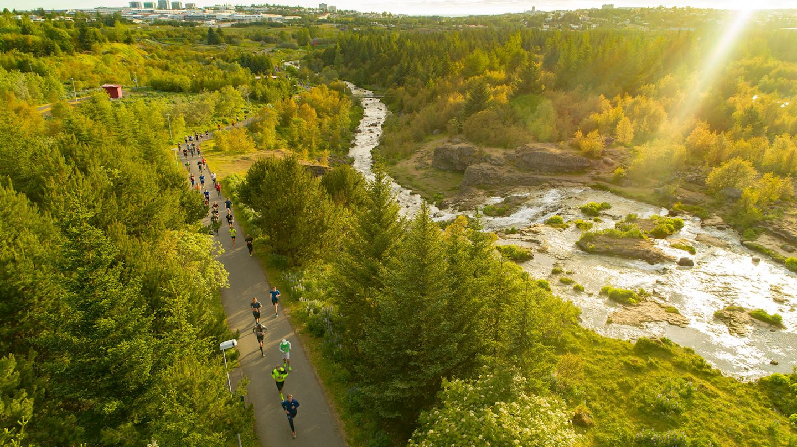

The Valencia Marathon, known for its flat and fast course, takes place in the stunning Spanish coastal city of Valencia, offering runners a perfect opportunity to achieve personal best times while enjoying beautiful views of the Mediterranean coastline and the city's modern architecture.
Tokyo Marathon
The Tokyo Marathon is one of the prestigious Abbott World Marathon Majors, attracting elite and amateur runners from around the world to compete on the streets of Japan's bustling capital, offering a unique blend of modern and traditional cityscapes.
Sevilla Marathon
The Sevilla Marathon, held in the heart of the historic city of Seville, Spain, provides runners with a fast and scenic course along the picturesque Guadalquivir River, showcasing the city's rich cultural heritage and vibrant atmosphere.

Reykjavik Marathon
The Reykjavik Marathon is an annual event that takes place in Iceland's capital city, offering runners a stunning backdrop of natural beauty, including geothermal hot springs and breathtaking landscapes, as they complete various race distances.
Medoc Marathon
The Medoc Marathon is a unique and internationally renowned running event that combines the challenge of a traditional marathon with the enjoyment of wine tasting as participants run through the picturesque vineyards of the Bordeaux region.